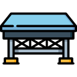
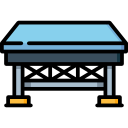

DESARROLLO TECNICAS PARA LA OBTENCIÓN DE REQUERIMIENTOS (CLIC PARA VISITAR C/U)
Entrevistas |
Etnografía |
| Escenarios | Sistemas Suaves |
| Observación | Reutilización de requisitos |
Anterior |
Siguiente |
| Entrevistas |
Etnografía |
| Escenarios | Sistemas Suaves |
| Observación | Reutilización de requisitos |
| Anterior |
Siguiente |